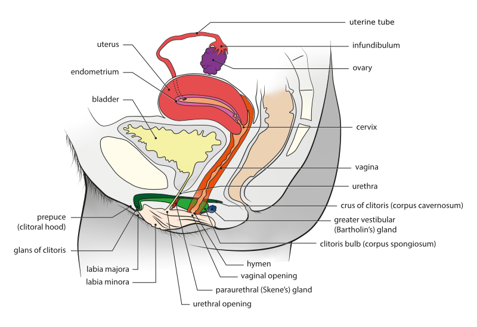

O primeiro dos dois grandes diferenciais é a bexiga hiperativa — literalmente uma bexiga ativa demais. Com pouca urina ela já contrai, e a paciente sente uma urgência incontrolável: urina o dia inteiro e a noite inteira. Quando, além da urgência, ela perde antes de chegar ao banheiro, o quadro se chama urge-incontinência. O nome descreve o mecanismo — e essa é uma boa notícia para memorizar: “bexiga hiperativa” é exatamente isso, a bexiga hiperativa. É a paciente da Lurdinha.
Esforço (tosse, espirro, levantar) → incontinência de esforço
O segundo grande diferencial é a incontinência de esforço (escreva por extenso — a sigla não é bem-vista na prova). Aqui a paciente não perde por urgência; perde quando faz força: ao tossir, ao espirrar, às vezes só ao levantar da cadeira. Há quem perca aos mínimos esforços. Às vezes é tratada como “assunto da Urologia”, mas é uroginecologia — território compartilhado. A força vence o suporte, e a urina escapa sem que a bexiga tenha contraído.
Perda contínua pela vagina, “nem sabe que é urina” → fístula
O terceiro diferencial, a ser aprofundado adiante, é a fístula: a paciente perde de forma contínua e nem sabe que é urina, porque sai pela vagina. Muitas se tratam repetidamente achando que é corrimento. É a perda que não tem ritmo de urgência nem de esforço — está sempre ali.
Longos períodos sem urinar, depois transborda → transbordamento (bexiga atônica)
O quarto diferencial é a perda por transbordamento: a bexiga enche além da capacidade e transborda, porque não consegue contrair. É quase o oposto exato da hiperativa — em vez de contrair a toda hora, não contrai nunca. A paciente passa longos períodos sem urinar e, de repente, começa a perder aos pouquinhos.
As duas que dominam a prova: bexiga hiperativa + incontinência de esforço
Guarde a hierarquia, porque a banca a respeita: bexiga hiperativa e incontinência de esforço dominam as provas. Fístula e transbordamento são os diferenciais que ampliam o leque — importam, e têm achados próprios que valem imagem —, mas o foco recai nas duas primeiras. Todo o resto do bloco gira em torno de distinguir, quantificar e tratar essas duas.
O fluxograma DDx das quatro incontinênciasO organizador de toda a discussão. Do nó “Como ela perde?” saem quatro ramos, cada um com o mecanismo em uma linha: urgência → bexiga hiperativa, esforço → incontinência de esforço (as que dominam a prova), contínua pela vagina → fístula e transbordamento → bexiga atônica. Clique o padrão de perda e veja o mecanismo iluminar.Interativo · toque cada padrão de perdaOnde cada mecanismo moraUm corte do trato urinário inferior situando onde cada falha acontece: a hiperativa no detrusor, a de esforço no suporte, a fístula na parede, o transbordamento na bexiga distendida.Esquema · a localização de cada falha

Anatomia pélvica feminina, corte sagital — bexiga e uretra
A bexiga afunila-se no colo vesical, onde começa a uretra feminina — curta e anterior à parede vaginal. É a base anatômica sobre a qual as quatro falhas acontecem (não confundir o colo vesical, transição bexiga–uretra, com o colo uterino, mais posterior).
R. Dewaele, J. Abdulcadir, C. Brockmann, O. Fillod e S. Valera-Kummer — Bioscope/Université de Genève, HUG e DIP. Via Wikimedia Commons, sob CC BY-SA 4.0.
Quiz — fixação
Mulher de 55 anos relata que, sempre que tosse ou levanta da cadeira, escapa urina — mas nega qualquer vontade súbita ou urgência antes da perda. O mecanismo mais provável é:
B — a virada. A âncora é “perde com esforço, sem urgência”: a bexiga não contraiu, quem cedeu foi o suporte.
A.É o mecanismo oposto — na urge-incontinência a marca é a urgência incontrolável ANTES da perda, ausente aqui.
C.Exige perda contínua pela vagina, sem relação com esforço — o padrão da fístula é “está sempre molhada”, não “perde ao tossir”.
D.Pede longos períodos sem urinar seguidos de gotejamento e bexiga distendida — o inverso do gatilho por esforço.
Sobre a hierarquia dos diferenciais da perda urinária na prova, é correto afirmar:
B — a virada. As duas primeiras concentram as questões; as outras duas são diferenciais que se deve conhecer, com achados próprios, mas não são o foco.
A.Troca “mais cobrado” por “mais grave” e ainda erra o fato — os dominantes são hiperativa e esforço.
C.Ignora que a banca hierarquiza; tratar tudo igual dilui o estudo justamente onde ele rende mais.
D.Repete o mito de que esforço “é da Urologia” — é uroginecologia, território compartilhado, e cai em GO.
A seguir
Antes de aprofundar cada diferencial, falta entender o que segura a urina no lugar — e por que a hiperativa e a de esforço perdem por motivos exatamente opostos.